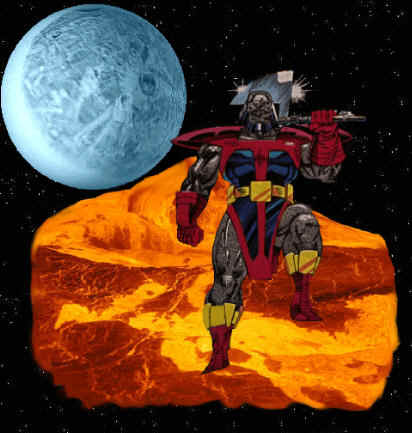

TERAX
Real
Name: Tyros
Occupation: Former Dictator, Former Herald of Galactus
Identity: Unknown to general public of Earth
Legal status: Citizen of Lanlak
Place of birth: City of Lanlak, planet Birj
Former aliases: Terrax the Tamer
First appearance: Fantastic Four #211
Height: 6'6"
Weight: 2,750 lbs.
Eyes: Grey
Hair: None
Powers: Terrax possessed vast cosmic power granted him by Galactus. Terrax's
body was coated with a flexible rock-like shell that was impervious to
extremes of heat and cold, from 50 degrees above absolute zero to the
interior of a small sun, pressure up to 100 Earth atmospheres, and
concessive force up to a fall at terminal velocity from the limit of Earth's
exosphere. His body had been sustained by cosmic energy, making it
unnecessary for him to eat or breathe. Terrax's strength had been augmented
by Galactus to unable him to lift (press) 75 tons without supplementing it
in any way by additional cosmic energy.
Terrax's mutant ability to psionically manipulate rock and earth was
augmented by Galactus's transformation at least a hundredfold. Terrax could
move planetary masses up to 100 miles in diameter. He could move asteroids
of miles in diameter at speeds of up to thousands of miles per hour. He
could control the direction of a swarm of meteors within a 100 miles of his
person. With concentration, he could affect a small piece of matter 1000
miles away from him. The farther the distance, however the less mass he was
able to affect. Standing on a planetary surface, he could affect tectonic
plates sufficiently to cause earthquakes and create chasms in the surface
thousands of feet deep or wide. Deploying his powers to the maximum extent,
he could separate a landmass the size of Manhattan Island and levitate it
miles off the Earth's surface. On worlds with lesser gravities, he could
lift even greater masses.
Terrax, like all of Galactus's heralds was able to enter warp-space and
negotiate through it in order to cover great spatial distances. Traversing
through the normal universe, he was able to attain .75 the speed of light.
Paraphernalia: Terrax wielded a cosmic axe which had several powers of it's
own. It was capable of emanating waves of destructive force sufficiently
powerful to rent a tear in Galactus's own ship. It could also project highly
impervious force shields. Since it operated independently of rock and earth,
the axe augmented the scope of Terrax's powers.
History: Tyros was originally the dictator of the small city-state Lanlak on
the world of Brij (sometimes translated as Terran), a moon of the gas giant
Marman in a solar system eighty thousand light years from Earth. Tyros ruled
through the use of force, his limited power over earth and rock. This power,
which apparently was a mutation unique to Tyros, enabled him to animate
constructs of stone which would patrol his kingdom maintaining his firm
control. Tyros loved power and conquest, and led a life of debauchery and
violence. Somehow, he came to the attention of Galactus, the world devourer.
Galactus had been seeking a new herald to guide him to fertile planets which
he needed for sustenance. The space being surmised that the common fault in
most of his former heralds was that their moral values prevented them from
fulfilling their duties. For a new herald, Galactus sought an individual who
would have no compunction in finding worlds for Galactus to render lifeless.
When the Fantastic Four came to Galactus to ask him for aid in the battle
against the Sphinx, Galactus agreed, but only with the condition that the
Fantastic Four would journey to Brij and subdue Tyros for him. The Fantastic
Four reluctantly did this, and in doing so, they freed the city of Lanlak
from Tyros's rule. Brought before Galactus Tyros was exposed to Galactus's
cosmic power, and was transformed into Terrax the Tamer. His minor control
over stone was augmented to an incalculable degree. Now, he could affect all
matter of rock and stone on nearly a planetary scale. His body was changed
so that it would withstand the vacuum of space. Finally, Galactus gave
Terrax a weapon called the "cosmic axe," capable of generating waves of
cosmic force.
As Galactus's new herald, Terrax found more worlds for his master than any
of the previous heralds. Terrax likened the discovery of new planets to the
feeling of conquest. On several occasions, Terrax annihilated large segments
of the population himself using his cosmic powers. As Galactus had hoped,
Terrax's lack of morality made him a successful herald. But whereas
Galactus's other heralds had a sense of loyalty to their master, Terrax had
none. Indeed, he served Galactus out of fear for his master's power, but
even conquered that fear on several occasions to defy Galactus's wishes.
Shortly after being transformed into Galactus's herald, Terrax fled from his
master and overthrew the ruling body of a small unnamed planet. He enslaved
the the entire population and set him self up as the planet's deity. Huge
segments of that worlds people died erecting temples and cities to glorify
Terrax. Terrax planned to use the survivors of his reign as the first wave
of a universe-conquering army. But before Terrax could proceed any farther,
Galactus summoned his herald. Fearful of his master's wrath, Terrax hid in a
black hole. Utilizing the powers of the Earth mutant Dazzler, Galactus freed
Terrax and made him obedient to his will again.
But Terrax's rebellious nature could not be totally stifled, and after a
while, Terrax again fled his master. This time he went to Earth. Utilizing
his power, Terrax levitated the entire island of Manhattan into Earth orbit
and used the lives of its millions of inhabitants to bargain with the
Fantastic Four. To spare Manhattan, Terrax demanded that they destroy
Galactus by attacking his ship. Galactus had by now realized that his herald
had become a liability to him. Returning Manhattan to Earth, Galactus
stripped Terrax of his cosmic power and the transformed alien was sent
hurtling from the top of the world trade center down to the street below.
Although seriously injured, Terrax's alien physique enabled him to survive
the fall. Unknown to both the Fantastic Four and the Avengers, who were
present at the site. Terrax's broken form was taken to a nearby hospital by
an unidentified passer by. He remained there for several months in a
semi-comatose state.
Victor Von Doom, looking for a pawn to use in a plot against the Fantastic
Four, discovered the fact of Terrax's survival. Terrax was kidnapped from
the hospital and brought back to Latveria by a squad of robots dispatched by
Doom. There, after six weeks of Doom's advanced treatments, Terrax
recovered. But, having been stripped of cosmic power, Terrax had no memories
of having been the herald of Galactus, and thus called himself Tyros once
more. Doom had recently perfected a device that was capable of endowing an
individual with limited cosmic power. Tyros readily agreed to be exposed to
the device's energies, as he wished revenge against the Fantastic Four.
Garbed in a special suit that would channel and regulate the cosmic energies
in his body, Tyros set off for New York. Unknown to him, the power Doom gave
him would consume Tyros's body within a matter of hours. Thus, Doom would
not be faced with an adversary whose power was vaster than his own, once
Tyros had served his purpose.
Tyros defeated the Fantastic Four and , detesting the fact he was in the
service of any master, he turned on Doom and immobilized the Latverian
monarch in his armor. At Tyros's moment of seeming triumph, the Silver
Surfer, first of Galactus's heralds,arrived to save the lives of his
friends, the Fantastic Four. Tyros believed that his power level was equal
to that of the Surfer's but Tyros was no match for someone who had received
cosmic power from Galactus himself. Because of this, Tyros was forced to use
his powers to the limit in order to combat the Surfer. This only served to
hasten the deterioration of the cosmic power Doom had embued him with. As
the two former heralds of Galactus engaged in battle, Tyros appeared to be
totally consumed by the "power cosmic." Though many thought him dead, Terrax
had merely been stripped of the Power Doom had given him. Terrax remained in
hiding for many years afterwards to avoid punishment for his crimes.Real
Name: Tyros
Occupation: Former Dictator, Former Herald of Galactus
Identity: Unknown to general public of Earth
Legal status: Citizen of Lanlak
Place of birth: City of Lanlak, planet Birj
Former aliases: Terrax the Tamer
First appearance: Fantastic Four #211
Height: 6'6"
Weight: 2,750 lbs.
Eyes: Grey
Hair: None
Powers: Terrax possessed vast cosmic power granted him by Galactus. Terrax's
body was coated with a flexible rock-like shell that was impervious to
extremes of heat and cold, from 50 degrees above absolute zero to the
interior of a small sun, pressure up to 100 Earth atmospheres, and
concessive force up to a fall at terminal velocity from the limit of Earth's
exosphere. His body had been sustained by cosmic energy, making it
unnecessary for him to eat or breathe. Terrax's strength had been augmented
by Galactus to unable him to lift (press) 75 tons without supplementing it
in any way by additional cosmic energy.
Terrax's mutant ability to psionically manipulate rock and earth was
augmented by Galactus's transformation at least a hundredfold. Terrax could
move planetary masses up to 100 miles in diameter. He could move asteroids
of miles in diameter at speeds of up to thousands of miles per hour. He
could control the direction of a swarm of meteors within a 100 miles of his
person. With concentration, he could affect a small piece of matter 1000
miles away from him. The farther the distance, however the less mass he was
able to affect. Standing on a planetary surface, he could affect tectonic
plates sufficiently to cause earthquakes and create chasms in the surface
thousands of feet deep or wide. Deploying his powers to the maximum extent,
he could separate a landmass the size of Manhattan Island and levitate it
miles off the Earth's surface. On worlds with lesser gravities, he could
lift even greater masses.
Terrax, like all of Galactus's heralds was able to enter warp-space and
negotiate through it in order to cover great spatial distances. Traversing
through the normal universe, he was able to attain .75 the speed of light.
Paraphernalia: Terrax wielded a cosmic axe which had several powers of it's
own. It was capable of emanating waves of destructive force sufficiently
powerful to rent a tear in Galactus's own ship. It could also project highly
impervious force shields. Since it operated independently of rock and earth,
the axe augmented the scope of Terrax's powers.